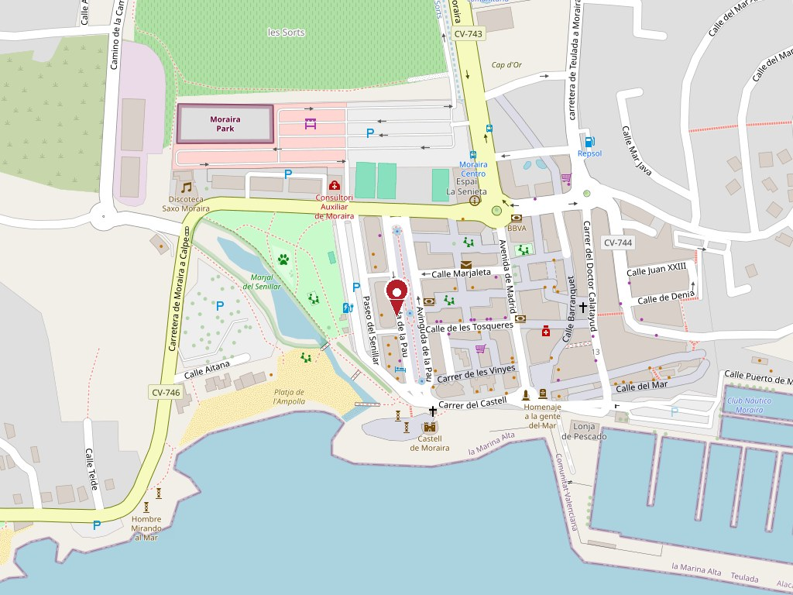
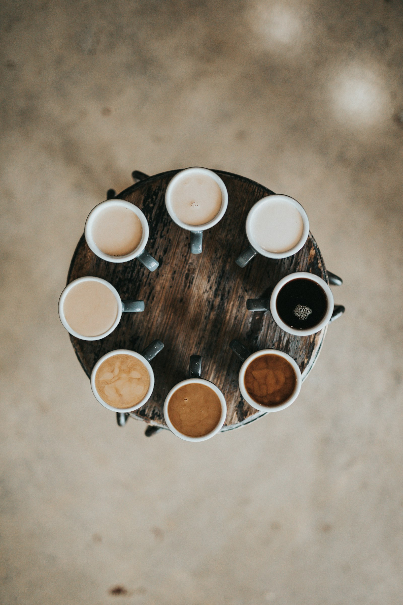

[producto]
[item]
Espacio para el pan o la bollería, cuando lo confirmen.
A space for bread or pastry, once they confirm it.
[precio]Moraira · Panadería y bistró
Bakery
Panadería, café y bistró en la Avinguda de la Paz, 4. Esta página es una demo para mostrar cómo podría verse una web sencilla del local. No es el sitio oficial.
A bakery, café and bistro at Avinguda de la Paz, 4. This page is a demo of how a simple site for the shop could look. It is not the official website.
01 / Obrador
No hay una carta oficial con precios en una web propia. Lo que sigue son placeholders, y una nota tomada de una ficha pública.
There is no official priced menu on a first-party website. What follows is a placeholder, plus a note from a public write-up.
Hello Jávea describe esta sucursal de Moraira (abierta en otoño de 2024) con pan de masa madre, bollería con mantequilla francesa, café de especialidad y brunch. Mencionan rollos de canela, bolas de cardamomo, huevo turco, pan de plátano, tarta de zanahoria y un bocadillo de pastrami.
Hello Jávea describes this Moraira branch (open since autumn 2024) with sourdough bread, pastry made with French butter, specialty coffee and brunch. It mentions cinnamon rolls, cardamom buns, Turkish eggs, banana bread, carrot cake and a pastrami sandwich.
Espacio para el pan o la bollería, cuando lo confirmen.
A space for bread or pastry, once they confirm it.
[precio]Espacio para un desayuno o un brunch.
A space for breakfast or brunch.
[precio]Espacio para el café u otra bebida.
A space for coffee or another drink.
[precio]02 / Obrador
Este horario aparece de forma coincidente en directorios públicos (Pueblito y gdweb). Conviene confirmarlo en el local o por Instagram, porque no sale de una web propia.
These hours appear consistently on public directories (Pueblito and gdweb). They should still be confirmed at the shop or on Instagram, because they do not come from a first-party site.
03 / Moraira

El marcador es aproximado, sobre la Avinguda de la Pau (el nombre valenciano de la avenida) en el centro de Moraira. OpenStreetMap tiene la calle, pero no una entrada levantada de la panadería ni el número 4. Ver mapa más grande.
The pin is approximate, on Avinguda de la Pau (the Valencian name of the avenue) in central Moraira. OpenStreetMap has the street, but no surveyed bakery entrance or house number 4. View a larger map.

